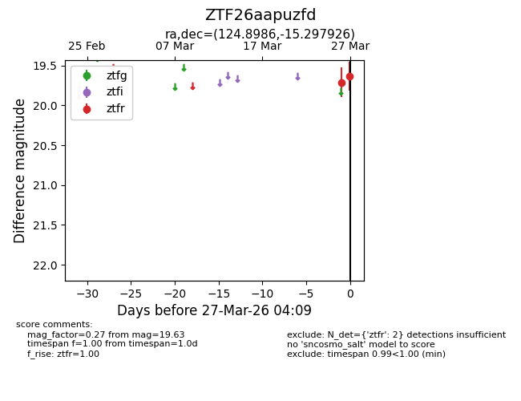
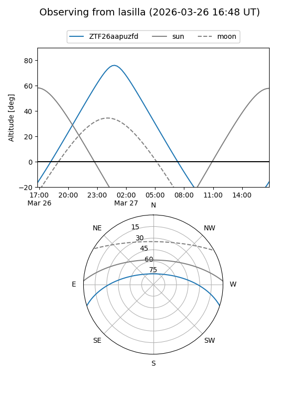
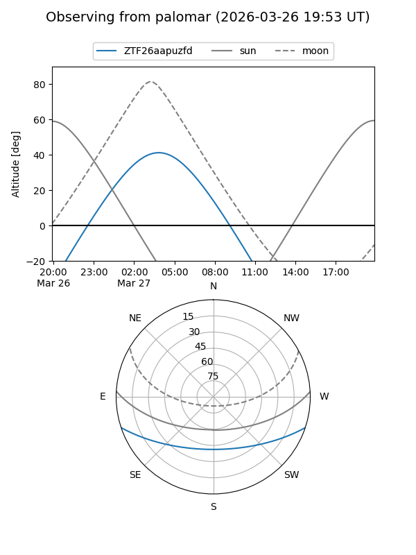

ZTF26aapuzfd
Target ZTF26aapuzfd at 2026-03-27 04:12
Aliases and brokers:
FINK: link
Lasair: link
ALeRCE: link
alt names
ZTF26aapuzfd (ztf,fink_ztf)
Coordinates:
equatorial (ra, dec) = 124.8986,-15.29793
equatorial (HMS+DMS) = 08:19:35.66,-15:17:52.53
galactic (l, b) = (237.0271,+11.64339)
Flags:
Photometry:
last ztfr=19.63
2 ztfr detections
Lightcurve

Visibility


Additional plots